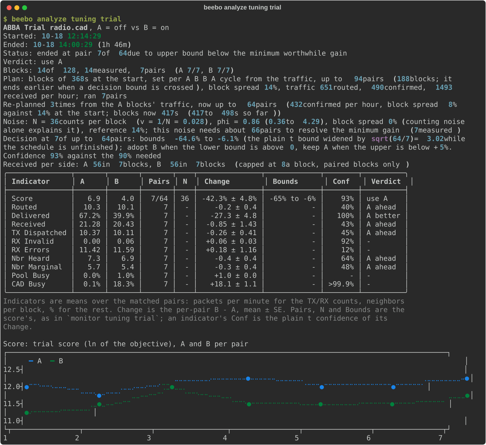

Trial Reference¶
Everything about how a setting trial works and how to read its result: the profiles and switches, the sequence, the statistics, the schedule, and the beebo analyze commands.
Profiles and switches¶
Some settings are high-impact and depend on the local environment, so the adaptive tuner does not tune them. A separate on-device trial decides them instead: it compares two values of one setting on the live node and keeps the better one. Twelve settings can be trialed, one after another, in the order of the table below.
Which of them run is the trial profile, repeater.routing.tuning.trial.profile:
main(default): the LNA, CAD, TX delay factor and retry policy, each against one challenger (the last column). The other eight rows also have a one-challenger list in this profile, used if you enable them by hand.exhaustive: all twelve settings with the full lists of the third column.
Selecting a profile sets the switches' .enable bits and resets their .values to
the profile's lists. Like the other trial settings it is RAM-only, so a reboot returns
it to main. The feed and trial records print the two compared values in the setting's
internal units: on/off switches as 0/1, the delay factors in hundredths
(txdelay a=50 b=100 is 0.5 against 1.0), rxdelay in tenths, agc in units of
4 s, and retry as a policy byte (64 is one retry at 4/5).
| Switch | Setting | Default .values (A first) |
main: selected, B |
|---|---|---|---|
lna |
fem.rxgain |
0,1 |
yes, on |
rxboost |
radio.rxgain |
0,1 |
no, on |
agc |
routing.agc.reset.interval (seconds) |
0,8,16,32 |
no, 8 |
interference |
routing.interference.threshold |
0,3,6,9 |
no, 3 |
cad |
radio.cad |
0,1 |
yes, on |
cr |
radio.lora.cr |
5,6,7,8 |
no, 6 |
multiacks |
node.multi_acks |
0,1 |
no, on |
retry |
routing.retry |
0,5,5\|6,5\|7 (a policy is its coding rates separated by \|) |
yes, 5 |
rxdelay |
routing.rxdelay |
0,7,13,20 |
no, 5 |
txdelay |
routing.txdelay |
0,0.5,1,2 |
yes, 1.0 |
directtxdelay |
routing.direct.txdelay |
0,0.5,1,2 |
no, 0.5 |
airtime |
routing.airtime |
0.5,1,3,9 |
no, 1.0 |
Each switch has a group repeater.routing.tuning.trial.switches.<name> (listed in
run order by beebo settings) with two leaves:
.enable(0/1, default 1): the switch is part of the sequence. A switch turns itself off once it is decided..values: the values it explores, A first and then up to 3 challengers separated by commas, for example5,6,8. The defaults start at the upstream setting and span the allowed range (the airtime default leaves out0, which removes the duty-cycle limit). A list of n values is n - 1 trials.
How a sequence runs¶
- Turn
repeater.routing.tuning.trial.enabledon (independent of the adaptive tuner). The profile decides the switches: four withmain(the default), all twelve withexhaustive; set.enableto 0 on the ones to leave out. A switch that is off is never touched. Turning the trial on also sets the monitor to record it, persisted: it enables the monitor and the tuning, event and radio capture and thetrial_pkt_rateevent, and turns rx and tx capture off so that a long run does not fill the ring (turn them on afterwards withbeebo monitor capture rx on). - Where the sequence starts is
tuning.trial.start. Withstored(the default) each switch's A is its stored value, the winner of the last run, and every value in its list is a challenger (one equal to A is skipped), so runs build on each other. Withlistthe node first sets every selected switch to the first value of its list and stores it, so the run starts from a known state whatever was stored before. The default lists start the LNA off and RX boost on (the Heltec V4 default), so the radio still hears traffic while the LNA is measured. - A planned trial starts as soon as the node has traffic data.
With
tuning.trial.block_size_sandtuning.trial.block_countat their default 0 (auto) the node plans the schedule (see Automatic schedule below) and holds the sequence only until it has counted events of each indicator the score weights. A planned schedule adapts to whatever rate there is: it has no rate floor, runs at any rate, capped at 72 hours, and ends idle only when a whole cycle counts nothing. With both set the schedule is fixed, and then a trial starts only while the node counts at leasttuning.trial.min_pkt_rateevents a minute (default 5; 0 = no minimum, and no idle stop either). The events are the score's own, those whose chance variation sets a block's noise: the confirmed deliveries for the default score, the routed attempts for a routed-only score, the received packets for a received-only one (a mix of weights gives the equivalent of the weighted sum; the rate is normalized by the largest weight squared, so scaling every score weight by the same factor does not change it).monitor tuning trialshows the rate ascounting N/min. Below the minimum the sequence waits, checking once a minute, and logs atrial_pkt_rateevent each time it starts or stops waiting. The same rate ends a running fixed trial (step 5), when a cycle counts clearly less than the minimum: more than 3 standard deviations under it, since counts vary by about their square root. - The first switch runs. Its first trial compares A with the first challenger:
every block (
tuning.trial.block_size_sseconds) the value alternates in an A/B/B/A pattern, fortuning.trial.block_countblocks (two per pair). Half the blocks run the other value, so expect reduced service during the trial. A fixed schedule that spans every hour of the day, 30 minute blocks for 96 blocks, compares like for like. - After every pair from the third on, the node checks whether the evidence has
settled, on the paired difference of the score (see How noisy a trial is). It keeps A as soon
as even the best case for B is smaller than a worthwhile gain
(
tuning.trial.min_gain_pct, default 5%). It adopts B as soon as even the worst case is a real gain with no loss in confirm ratio (more than 2 percentage points), unless B's confirmed deliveries grew: more forwarding lowers the ratio without losing anything. The bounds are the mean of the paired change plus or minust x sqrt(N / n)standard errors, withnthe pairs so far,Nthe most pairs the trial may run andtthe Student-t value at the confidence leveltuning.trial.confidence_pct(90, 95 or 99 percent, default 95); the factorsqrt(N / n)is what lets the node look after every pair, so the bounds are wider than the plain interval until the last pair. A clear result ends the trial early.confidence_pctis how sure the node wants to be before it changes a setting: 100 minus it is about the most often a trial of a setting with no real gain adopts B, counting every look, not each look alone (the rule is the plain t value scaled bysqrt(N / n), close to the nominal rate but not exact). Each switch's trial has its own budget, so over a sequence of switches the expected number of false adoptions adds up. B is adopted when the lower bound is above 0, not abovemin_gain_pct:min_gain_pctsets the pairs the plan asks for and the point below which A is kept.monitor tuning trialshows the bounds andConf, the confidence they amount to: 100 minus it is the p-value adjusted for the looks, and B is adopted when it reachesconfidence_pct. It is not the probability that B is better. An undecided trial whose bounds stopped moving ends as inconclusive with A kept (it needs at least 7 pairs); otherwise it runs to the end of the schedule, where B is adopted only if the plain test passes; otherwise, or with fewer than 3 pairs, it ends undecided with A kept. Before that test, after every pair, the node checks for a dead side: a block that heard nothing never forms a pair, so a setting that deafens the radio would otherwise lose by default. When one value heard at most a quarter of the other's packets (Received, counted up to 8 per block), the other heard traffic in at least 2 blocks, and a split that uneven is too unlikely to be chance, the value that hears wins at once. After every A/B/B/A cycle of a fixed schedule, an average clearly belowtuning.trial.min_pkt_rateevents a minute over the whole cycle (a planned schedule: no events at all) ends the trial as idle with A kept: the channel is too quiet to decide anything. The switch stays pending and the same trial runs again an hour later; a run of idle ends with no completed trial for 24 h turnstuning.trial.enabledoff. - The winner is stored before the next trial starts. The next trial compares that winner with the next challenger of the list, and a challenger equal to the winner is skipped.
- When a switch has run out of challengers the node turns its
.enableoff and moves to the next switch. When every selected switch is decided it turnstuning.trial.enabledoff too; turn them on again to run another sequence.
Combined trial¶
A one-switch trial resolves a gain only when it is large: a 1-2% switch never
does at 10 packets a minute, and its trend is thrown away. Several such gains add
up and resolve together. So screen the switches one by one for a trend (the Change
and Conf columns of monitor tuning trial), then set tuning.trial.combined on
and run one trial where side A and side B differ in all of them at once.
- Side A is each selected switch's stored value. Side B is its current challenger:
with
tuning.trial.start storedthe first value of itsvalueslist that differs from the stored one, withlistthe second value. Put the direction its screening trend favored first, or setvaluestoA,B. - A switch takes part when it is selected, its B differs from its A, and it can run
(the FEM LNA needs LNA control). Anything
else changes nothing. Fewer than two participants ends as
skipped (same). - The decision is the usual paired test. A win adopts every participant's B; there is no per-switch attribution. Every selected switch is decided afterward, whatever the outcome (an idle end retries the whole combination an hour later).
- A manual change of any participant aborts the trial, as for one switch.
monitor tuning trialshows acombinedrow (A and B are the two sets) and marks the participantsin combined;analyze tuning triallists the participants.
What changes and what is kept¶
- The four radio switches (
lna,rxboost,cr,cad) act on the radio hardware live only: a reboot in the middle of a trial puts the stored value back. The other eight settings are read by the node from its running settings, so a trial writes its value there while it runs and puts the original back afterwards. - Only a winner is stored, and the sequence stores A at its start. So the stored
settings of the selected switches change when a sequence starts, and stay
changed if you stop it. Every change is logged as a
settingrecord with sourcetuning. - A packet pool guardrail trip ends the running trial with A kept (outcome
aborted_guardrail); the sequence goes on with the switch's next challenger, or the next switch. Disabling the trial or changing anytuning.trial.*setting aborts the running trial and restores the setting. Changing atuning.trial.*setting restarts the sequence for the switches still selected: it stores their A again, so it undoes a winner adopted for a switch that has not finished (a finished switch is off and is not touched). - A manual change of a switch's own setting during its trial (through
beebo settingsor the binary protocol) aborts that trial; the switch's trial then starts again with the new stored value as A. - Caveat: for the six settings held in the running settings (
agc,interference,rxdelay,txdelay,directtxdelay,airtime), any other setting change while their trial runs also saves the challenger value, and asettyped in the repeater's text CLI for the same setting is overwritten by the trial.
Settings¶
All RAM-only and back to their defaults after a reboot:
tuning.trial.enabled (off), .profile (main), .switches.<name>.enable and .values (above),
.block_size_s (0 = auto, or 1 to 3600 s), .block_count (0 = auto, or 2 to 1000),
.block_spread_pct (0 = built-in start, advanced, 0 to 70), .confidence_pct (95), .min_gain_pct (5),
.min_pkt_rate (5 events a minute, the start gate and the idle stop of a fixed schedule; see steps 3
and 5) and .start
(stored, or list; see step 2).
Each block is logged as MON_EVAL, and the trial itself as MON_TRIAL records: a
start (setting and sides), one per block (the sequential rule's mean and bounds so
far) and an end (outcome and statistics), see beebo monitor decode -k trial.
They are captured only with repeater.monitor.tuning on.
How noisy a trial is¶
A trial decides from the paired differences d of the
score between an A block and the next B block, so what limits it is how much d
varies when the setting makes no difference. Two things add to that:
- Counting noise,
v: a block holds a limited number of events, and the score moves by chance with their count.v = 1/N, whereNis the counts per block of the score: for the default score, which is the confirmed deliveries per hour, the confirmed deliveries in the block (the routed attempts for a routed-only score, the received packets for a received-only one), so a block with 33 of them hasvof about 0.03 (a 17% swing). A longer block averages it down. - The block spread,
c: bursts of traffic, slow drift over the day, and an effect that differs from pair to pair. The same in a long block as in a short one, so longer blocks do not average it away.
A block's variance is v + c, a pair difference has twice that, and with P
pairs the trial can tell a gain g (gain, 5% by default) from nothing at the
confidence t (about 2 at 95%) when P is about 2 t² (v + c) / g². With
v = c = 0.03 that is about 190 pairs. Once a block holds about 1/c confirmed
deliveries, more length buys little; more pairs do. The ratio
phi = var(d) / (2 v) says how far a trial is above counting noise alone: 1 is
counting noise only, and it grows with block length.
beebo analyze tuning phi measures these on pulled trials (see Analyzing trials). On 13 trials pulled from one repeater (300 s and 900 s blocks) the block spread is 14% (c = 0.020, 0.007 to 0.039), about 51 counts per block (N), and phi is 1.2 to 1.3 for 300 s blocks and 2.5 to 3.1 for 900 s blocks.
Automatic schedule¶
With block_size_s or block_count at 0 the node
plans the missing one from its own traffic, so the confidence and min_gain_pct
you asked for are reachable. A background tracker keeps the routed, confirmed and
received rates of the last few hours (an average that fades with a two hour time
constant), ready once it has seen 5 confirmed deliveries over 30 seconds, so a
node that just booted can plan within minutes. From those rates and the score
weights the plan takes the block length that holds about 50 counts of the score
(the confirmed deliveries for the default score; 60 s to 1 h), the most pairs from the formula under How noisy a trial is,
and the block spread c that starts at the built-in 0.02 (a 14% swing, what the
field trials pooled to). That start is only a first guess and needs no setting
(block_spread_pct, 0 = built-in, overrides it as an advanced setting): once a running
trial has 4 pairs, each re-plan moves the spread toward what the pairs show,
c = var(d) / 2 - v (the variance of a block less its counting noise, measured
around the mean difference, so it does not depend on the effect under test),
weighted as the pairs seen against 3 pairs for the start. A noisier channel than
the start lengthens the trial, a quieter one shortens it, so the most pairs move up
or down as the trial learns. A planned trial has no rate floor (min_pkt_rate applies to fixed schedules only): it
runs at whatever rate there is, with longer blocks when the rate falls. A schedule that needs more
than 72 hours or 1000 blocks is
underpowered: the trial runs capped at those limits and ends when a decision bound
is crossed or the cap is reached, inconclusive if the data does not decide.
With only one of the two set the other is planned; a fixed block_count is
never checked for feasibility and never re-planned. The settings keep reading 0:
the planned values are in the trial's start record and plan records. monitor tuning trial shows, next to each auto setting, the schedule of the trial running now (auto (running trial: up to 304 blocks), auto (running trial: 150 s now, set per cycle)) or what the node would plan for the next one (auto (next trial: ...)), or that it is still collecting traffic data, has no counts for the score yet, or the plan is underpowered. Under them, at most 152 pairs, 8h31m left at the current traffic is what the trial can take at the traffic it sees now, with the remaining blocks as long as they are now (they follow the traffic). It ends earlier when a decision bound is crossed. The table's N column is the counts per block that set its noise, 1/N: the confirmed deliveries for the default score, the routed attempts for a routed-only score, the received packets for a received-only one (a mix gives the weighted sum's equivalent). Bounds is the node's decision interval at the pairs so far and Conf the confidence it amounts to (100 minus Conf is the p-value adjusted for the looks), the figure to compare with confidence_pct: B is adopted when Conf reaches it.
How slow a node can be¶
The block length follows the rate, 3000 / rate seconds for 50 events, and the pairs needed do not, so the time a trial can take scales with 1 / rate. The longest trial at the built-in block spread (c = 0.02), in hours, by events a minute (the figures are computed from the planner's formulas, not measured on a node):
| events a minute | 95% confidence, 5% gain | 90%, 5% gain | 90%, 10% gain |
|---|---|---|---|
| 20 | 12 | 8 | 2 |
| 5 | 44 | 32 | 9 |
| 3 | 73 (capped) | 53 | 15 |
| 2 | 109 (capped) | 79 (capped) | 22 |
| 1 | 217 (capped) | 157 (capped) | 44 |
The pairs are 130, 94 and 26 (260, 188 and 52 blocks). A longest trial above 72 hours
runs capped at 72 hours. A trial usually ends earlier, at about 60% of the longest
in simulation, when a decision bound is crossed. So with the defaults the practical
limit is about 3.5 events a minute; a larger min_gain_pct or a lower
confidence_pct lowers it. Below it the trial runs capped at 72 hours and is likely to end inconclusive. Blocks stop
growing at 1 h (below about 0.8 events a minute), the noise then rises, and a trial
that spans hours of changing traffic measures a larger block spread than the start
value, which the plan follows after a few pairs.
block_count auto is the most blocks the trial may run, not a fixed schedule: the
trial ends as soon as the decision bounds settle it, and the pairs it needs depend
only on the confidence, min_gain_pct and the noise. block_size_s auto is the
block length now. After every A B B A cycle the node plans again from the rates of
its last four A blocks (side B changes the rates, side A does not carry the effect
under test, so the plan never sees the result). The next cycle's four blocks take
the length that holds about 50 counts at that rate, all four alike so every pair
stays comparable and drift still cancels inside the cycle, and a change of less than
15% is ignored so a noisy rate does not move it every cycle. The noise of a block
stays about the same whatever the traffic does, so the pairs needed stay about the same
and the time changes: a quiet hour gives longer blocks, a busy one shorter ones. With
block_count auto the pairs also grow or shrink to the noise measured, up to the 72
hour cap, counted from the start of the trial; a block at its 1 h ceiling cannot
hold the counts, so the noise rises and the pairs grow. A trial whose schedule hits the
cap runs to it and decides there. A planned
trial waits 10 s after each switch of the value before it starts counting a block
(the confirmations of packets sent before the switch are not counted), and ends
early as inconclusive once even the full schedule could not decide. Shorten a
trial by raising min_gain_pct, or lowering confidence_pct,
or fixing block_count. analyze tuning trial prints the plan, each re-plan
(with the block length it set), where the decision stands and the noise the blocks measured.
The trial report¶
beebo analyze tuning trial prints this report; its options are under Analyzing trials.
The report of one trial starts with a header, then the plan, the noise, the decision and the table of indicators:

Received per side is what the dead-side check counts; its split p appears once
one value hears at least four times the other.
Status says whether the trial ended (and how: at which pair and why, or that the
schedule completed), is running, or was interrupted (no end record and the capture
runs on without another block). Ended and Verdict appear once the node has
written the end record. The table has one row per indicator with the mean of A and
B over the matched pairs, Change (the per-pair B - A, mean and standard error),
Conf (two-sided Student t confidence that the change is not zero) and a
Verdict. The columns match monitor tuning trial: Pairs, N and Bounds are
the score's and show - on an indicator row.
The first row, Score, is what the trial optimizes and decides on: the objective's
log score, whose A and B are the score as a packet rate per minute (confirmed deliveries for the default weights, so B / A - 1 is the Change) and whose Change is shown as a
relative gain in percent (e^x - 1 of the log-score difference, so it reads against
min_gain_pct), with
the trial's verdict (use A, use B, inconclusive, use A, undecided, use A,
use B (A heard almost nothing) or the reverse, or an abort reason);
before 3 pairs it reads undecided, and without an end record so far: ... shows
what the node's own rule gives. The rows Routed, Delivered and Received are the score's indicators; the rows below them are diagnostics
(TX Dispatched, RX Invalid,
RX Errors, Nbr Heard, Nbr Marginal, Pool Busy, CAD Busy). Where higher is
better they show B better or A better once their confidence reaches the
trial's confidence setting, and B ahead or A ahead below it; the rest show -.
The trial re-derives the decision offline with the node's own rule and flags a
difference from the node's end record. Blocks the node marked insufficient_data
or invalidated are excluded from the pairing.
Analyzing trials¶
beebo analyze tuning trial — reading a setting trial¶
beebo analyze tuning trial [FILE] reports the latest setting trial in one pulled day file (the most recent by default; a relative FILE is resolved against --dir). A trial record is captured only with repeater.monitor.tuning on. For a trial with a planned schedule it also prints the plan (block length, blocks and pairs, block spread, the traffic it planned from, pairs run) and the noise the node measured (var(d)/2, counting noise v, phi). A set can also be named before the report, like every other analyze report (gatto analyze monring_2026-09-27 tuning trial), but it must be a raw .bin set. When the newest set holds no trial, the report says which set does.
$ gatto monitor pull
$ gatto analyze tuning trial
| Option | Effect |
|---|---|
--all |
Detail every trial in the file, not just the latest |
--blocks |
Add the per-block table (every indicator, one row per block) |
--legend |
Print the definition of every column and verdict word first |
--score NAME=WEIGHT,... |
Re-score the blocks offline with these score weights (tenths, -50 to 50; routed, delivered, received; one not named is 0), e.g. --score received=10. The node's own verdict is unchanged and shown in a note |
--diagnostics |
Also chart the diagnostic indicators; by default only Score, Routed, Delivered and Received are charted (the table lists all rows) |
--json |
JSON instead of tables |
With more than one trial in the file (a sequence), a "Trial Plan" table comes first: one line per trial with its setting, A, B, start, status (ended, running or interrupted), the pairs used of those planned, N (the counts per block that set its noise, 1/N), Spread (the block spread, see how noisy a trial is) and verdict, with the pool over the trials under it. The report also has a Decision line: the bounds at the pairs measured of the most the trial may run, the widening by the planned pairs, the two thresholds, and the confidence against the one needed. Every trial report has a Noise line from its measured blocks: N, φ with its 95% interval, the block spread with c and its interval against the planner's built-in start of 14%, and the pairs this noise needs to resolve the minimum gain; --json carries it as phi. The trial report explains each column.
beebo analyze tuning phi — how noisy the trials are¶
The per-trial figures are part of analyze tuning trial; this command pools them over every trial of a set.
beebo analyze tuning phi [FILE] measures how noisy the paired score differences of every finished trial in a pulled set are (the most recent by default; --from NAME, a leading dataset name or --all for every raw set under --dir). A block's variance is v + c: v the counting noise (1/N, N the counts per block of the score: the confirmed deliveries for the default score), c the block spread, the part that longer blocks do not average away (bursts, drift, an effect that differs between pairs). φ = var(d) / (2 v) is 1 for counting noise alone and grows with block length. See How noisy a trial is.
$ gatto monitor pull
$ gatto analyze tuning phi --all
It prints one row per trial with at least 3 measured pairs (setting, start, block length in seconds, pairs, confirm ratio p, counts per block N, mean paired difference, φ), the pool per setting and block length, and the overall pools with 95% intervals: φ, and the block spread (the standard deviation sqrt(c) in percent, with c and its interval) and the block size N = 1/c (counts per block) beyond which longer blocks add little, ending with whether a reference block spread of 14% (c = 0.02) is inside c's interval. The reference is the planner's built-in start; the command's constant is not a device setting. Trials it cannot use are listed with the reason (too few pairs, or a received weight on a capture without the on-device rx counter). --score NAME=WEIGHT,... re-scores with other weights as in analyze tuning trial; --json prints the same as one object.
beebo analyze tuning effect splits the whole capture by setting assignment (lna, rxgain, tx_power, any changed setting; -p picks which) and reports the indicators for each, plus the change against the longest-running assignment computed hour by hour so time-of-day load cancels.